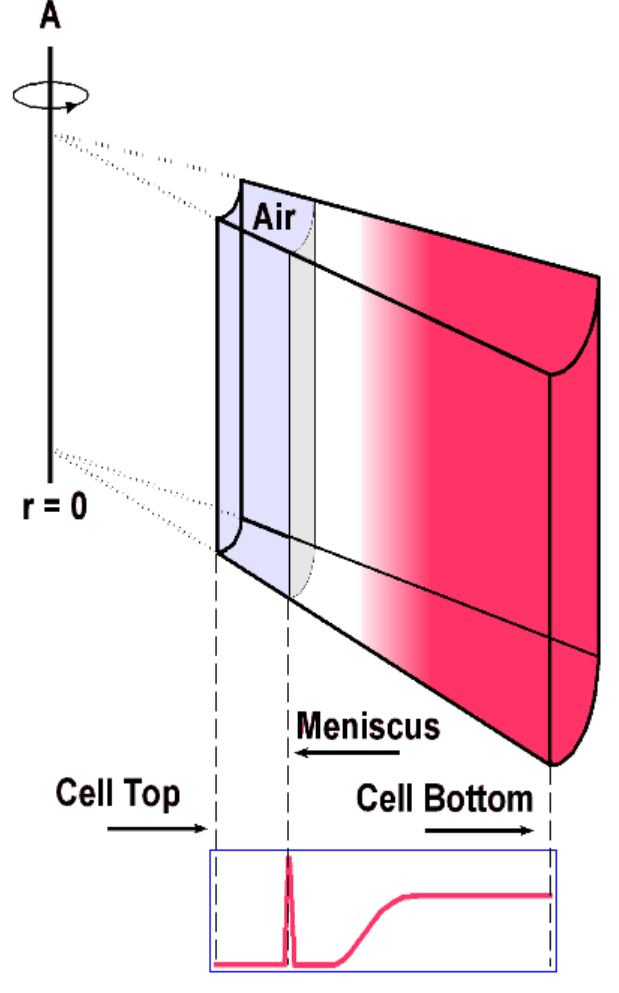
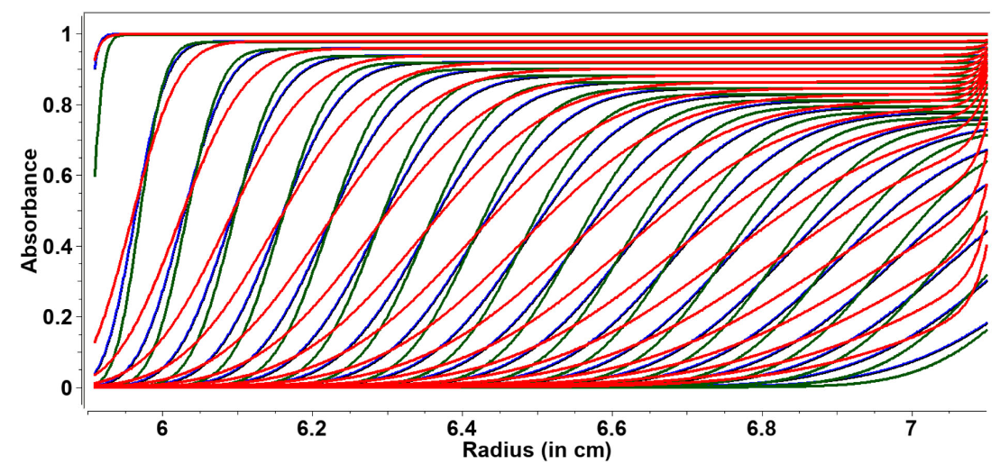

Sedimentation Velocity Experiments
For more information, see:
On the analysis of sedimentation velocity in the study of protein complexes. Brown, Balbo, Schuck. 2009.
This paper studies the inter-related problems, clarifying experimental limitations, and developing tools to improve reliable data interpretation of SV AUC.
Instrument Operation and Data Collection
Monitoring
Analysis

Sedimentation velocity (SV) experiments are performed at high speeds to overcome the effects of diffusion. In an SV experiment, the speed is set such that the back diffusion from the bottom of the cell is minimal compared to the rate of sedimentation, forming a moving boundary. The evolution of the shape of this boundary over time is representative of the composition, sedimentation, and diffusion properties of the sample. Molecular weight can also be analyzed in ideal cases.
SV experiments are best for:
-
determining composition
-
assaying for contaminants and aggregates
-
distinguishing reversible from non-interacting systems (comparing concentration series)
Optimal Speed and Duration
This section is based on the research presented in:
What is the optimal speed for a given solution? The rotor's speed is a function of the mass of the particle, its diffusion characteristics, time between scans, and sample heterogeneity, but there is no simple relationship between them.
It is important to consider the singal produced by the sedimenting particle for each of the fitted parameters (sedimentation coefficient, diffusion coefficient, etc.). The larger the signal of a parameter, the higher the confidence in the determination of the parameter. There is an inverse relationship between the sedimentation and diffusion transport signals as a function of the rotor speed and experiment duration.
Consider the case where the rotor speed is increased:
-
the seperation will increase;
-
resolution is \(s\) is improved.
But, a fast sedimenting particle will reduce the information avaliable for the diffusion coefficient because it does not spend much time diffusing before it is pelleted.
Now, consider the case where the rotor speed is decreased:
-
lower resolution in \(s\);
-
more signal in \(D\).
Another factor to consider is the number of scans that can be collected during the duration of the experiment. There is a practical limit on the time avaliable for scanning based on the nmber of samples in the rotor. Futhermore, the transport by diffusion is proportional to the square root power of time, while transport due to sedimentation proceeds with the first power of time.
Identification of Optimal Speed Profiles for Homogeneous and Heterogenous Samples Using Simulated Data
For reliable test cases we can use simulated data, which permits a systematic evaluation of the information that is retrieved under conditions where rotor speed and experimental duration are varied, with all other paramaters held constant. It is crucial to have a properly designed experiment to recover information from a SV experiment. The following factors contribute to the informations quality:
Column Length Longer columns allow for more data points with improved seperation. However, diffusion transport is maximized near the top of the cell, where the steep concentration gradients near the meniscus enhances diffusional flows. The diffusion has a similar effect at the bottom of the cell, where the concentration gradeients enhance diffusion information from the back-diffusional flow off the cell bottom.
Despite the high concentration regions at the bottom tending to be outside most detector's dynamic range, the curvatureof the boundary is still significiantly affected in the regions where measurements are possible.
Duration The experiment should be long enough to allow the solute to completely sediment. Lower information will be avaiable if the experiment is aborted too early, and collecting data past the pelleting or equilibiurm state is pointless as there will be no new information.
Signal Concentration and Duration The amount of single avaliable should be scaled to the noise that is expected from the experiment. The Beckman Proteomelab XL-A has a signal-to-noise ratio (SNR) of 250-300, and the Beckman Optima AUC is at least two-fold higher. The SNR is calculated by dividing the total signal by the RMSD of the fitted data when random residuals are obtained.
Simulation Parameters for Experimental Datasets
-
Maximum column length: 1.3 cm
-
Mensiscus: 5.9 cm (1 mm air bubble above)
-
Bottom of Cell: 7.2 cm
-
Total Loading Volume: 0.45 ml
The duration of the experiment for a given speed and solute is derived from:
which is the definition of the sedimetation coefficient divided by the centrifugal field strength. This leads to the differential equation:
where \(r_{m}\) is the meniscus position, \(t_{0}\) is the starting time, and \(r_{b}\) is the midpoint of the boundary at some time \(t\). When this equation is solved or \(t\), with \(t_{0}\) = 0, we obtain an equation to predit the optimal duratio nof a SV experiment at any speed:
This equation is embedded in a calculator in UltraScan that will estimate the optimal time for a given rotor speed and \(s\) value, and the optimal speed for a given experimental duration, given \(s\). This equation is independent of the diffusion coefficient and guarentees optimal coverage of the avaible column length.
Example: Determine Experiment Duration Using Simulations
Consider a molecule with a sedimentation coefficient of 5 S and frictional ratio of 1.28. The meniscus position, \(r_{m}\) is at 5.9 cm.
What experiment duration is optimal is the rotor is run at a speed of 30 kRPM, 45 kRPM, and 60 kRPM? How does the shape of the boundary change?
First, take the RPM values and convert to angular velocity (rad/s):
30 kRPM = 3141.59 rad/s
45 kRPM = 4712.39 rad/s
60 kRPM = 6283.19 rad/s
The value of \(r_{b}\) is 7.2 cm.

\(\textbf{Figure 1}\) ASTFEM-simulated SV data at three different speeds and durations for a 5 S species with a frictional ratio of 1.28.
Red: 30 kRPM, 11 h:12 m = 40,320 s
Blue: 45 kRPM, 4 h:58 m = 17,880 s
Green: 60 kRPM, 2 h:58 m = 10,080 s
The duration and speed combinations shown above allow for the same amount of cumulative centrifugal force on the species, but the diffusion information is more significant at lower speeds. This is represented by the shallower traces (in red) and the increased back-diffusion affect on the boundary shape.